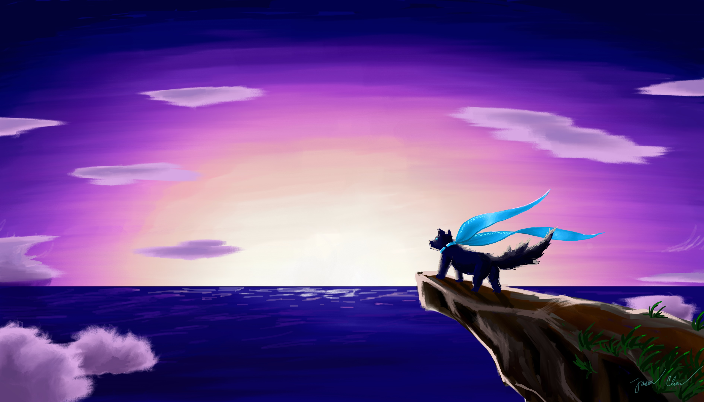

  <!-- Photo grid -->
  <div class="w3-row galleryback">
    <div class="w3-threequarter">
      The main banner image in glorious 4K">
      
      
    </div>
    <div class="w3-quarter">
      
      
      
      
      
    </div>

  <!-- split section -->
  </div>
  <div class="w3-row">
    <div class="w3-half">

    </div>

    <div class="w3-half">

    </div>
  </div>

<!-- REFERENCE for extra pics:  -->
